开发日志
分享开发心得、技术文章和创作故事
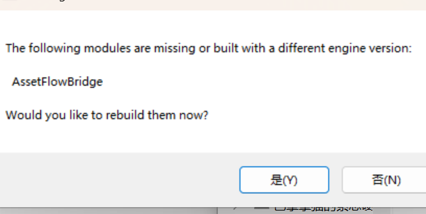

星露谷物语MOD开发日志：水上行走与穿河工具
因安装大量扩展内容MOD导致农场地形变化，原本的建筑与作物浮在水面无法采收。自主开发水上行走MOD，解决河流/湖面穿行与采收问题，支持开关切换。
阅读全文
视觉效果开发合集（未整理完毕）
汇集材质系统、粒子特效、环境效果和动画效果等多个方向的开发实践，包含近70个演示，系统整理视觉效果开发经验与配套学习存档。
相关日志

AI生成3D研究合集（模型使用日志 · 高低模工作流）
归档 AI 工具生成三维模型的实际使用流程与可行性评估，另附 AI 生成 3D 高低模的技术原理、五种技术范式、生成条件清单与毕设可用实验对比工具链详解。
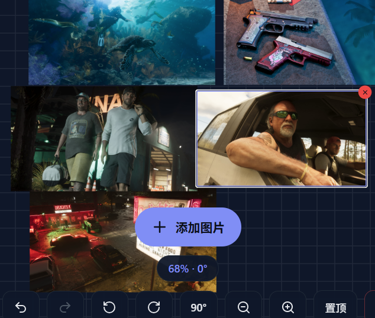
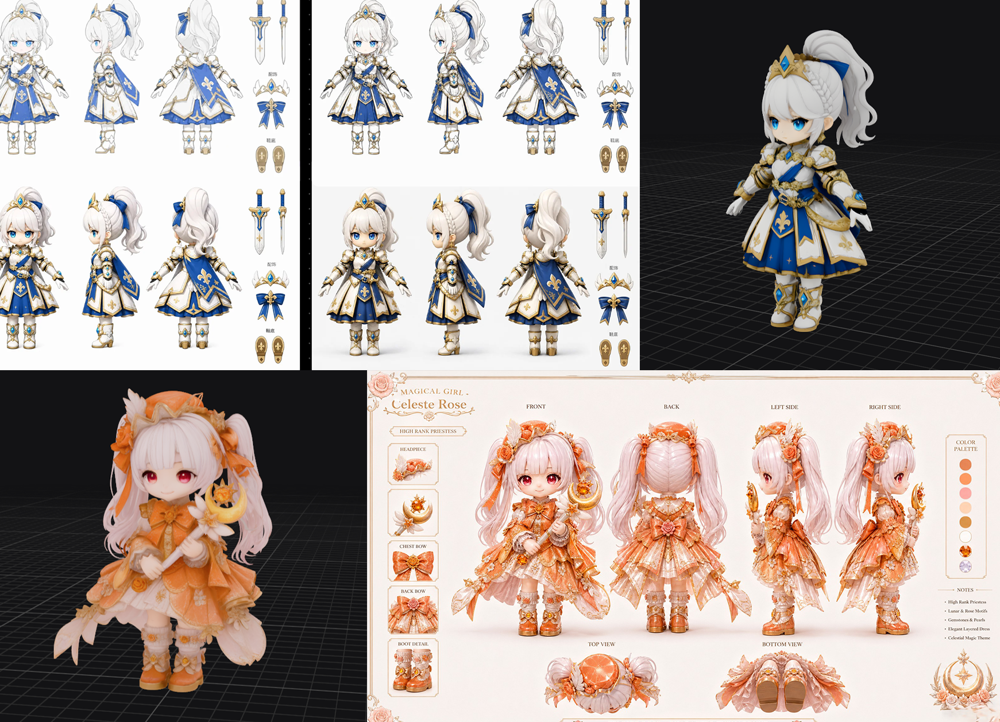
混元3D生成研究合集（官方平台 · ComfyUI 管线）
归档混元3D的两种使用路径，包括官方平台风格化角色 场景道具 能量水晶等模型生成测试与平台优劣势分析，以及基于 ComfyUI 管线的单视图 多视图生成探索与节点流程简化记录。
Shadowheart 暗影之心 — 半人工半AI的PBR写实角色制作日志
出于对《博德之门3》影心这个角色的喜爱而创作，AI生成基础模型后进入全人工精修阶段，累计6次人工模型改动（总计13小时左右）：人工制作头部和毛发、追加指甲和耳饰、ZB调头发体积+Maya XGen生成发丝。
阅读全文
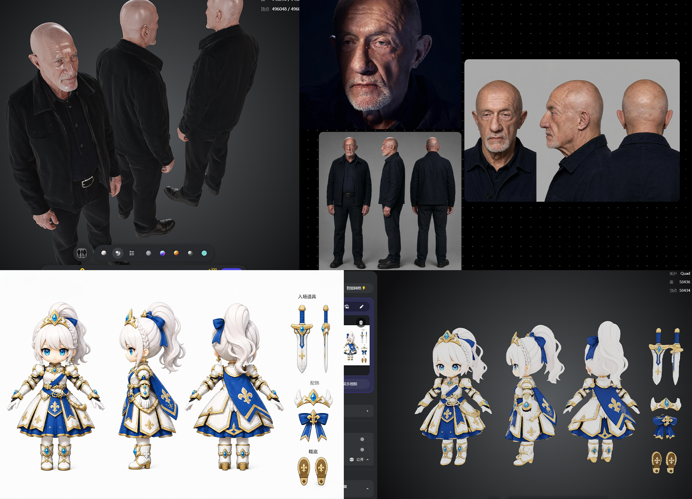

大一阶段与本科前的综合记录
整理了2022-2023年阶段的主要内容和创作感悟，包括绘画基础、传统艺术、数字绘画和艺术理论，包含纯艺（综合材料/立绘/InDesign/AE/剪辑）+ 2D动画工具探索（Live2D/Spine/VRoid Studio 核心流程与经验）+3D初学，完整记录2022-2023年从纯艺到3D的创作路径。而这背后，是大学四年几乎完全依靠自学、偶尔放松一下的大学生活，学习时长每天10~15小时起步，即使一天里有13小时左右被其他事情占满，也保底6小时自学。

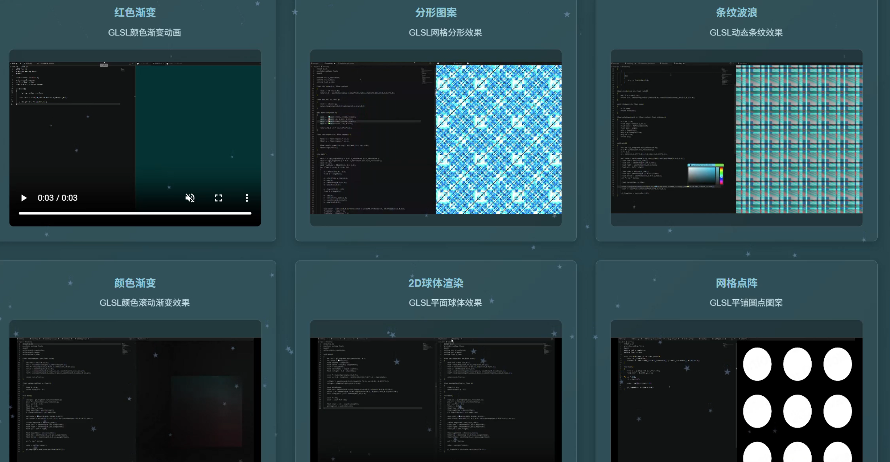
GLSL shader研究制作日志(大三暑假浅学记录)
大三暑假跟着油管和 B 站教程做的短期 GLSL Shader 跟练记录，涵盖动画图案、光线追踪、分形效果等几种基础视觉效果，以跟着教程动手写为主，作为入门体验存档。
阅读全文
大三端午时做的Unity作品集网站制作日志
2025年5月30日到2025年6月2日期间开发的基于Unity引擎的作品集网站，用于展示大三之前的作品和研究成果，采用现代3D交互方式，让访问者能够更加直观地了解创作和技术能力。
阅读全文
个人网站与电脑桌面桌宠系统制作日志
制作了网页嵌入版与电脑桌面独立版两套桌宠系统。网页版通过HTML、CSS和JavaScript实现，包含时间感知、鼠标交互、随机情绪、页面导航对话、睡眠机制、控制按钮、好感度系统、拖拽功能、天气感知和节日特效等多种功能。桌面版更接入了AI大模型，像DeepSeek/ChatGPT那样直接与桌宠进行自然语言实时对话，支持角色化人格、情绪联动与上下文记忆，为个人作品集网站增添了互动性和趣味性。部署方面最初使用阿里云域名已购买使用一年，后续续费成本对学生党偏高，目前转回 GitHub Pages 运行。
相关日志

被放弃的毕业设计：三维全流程和2D两个媒介结合开发日志
四人团队合作项目，我同时负责三维和二维以及后期的内容创作，采用三维全流程制作方法辅助工作，减少工作量，其他成员负责纯二维部分。融合三维建模的立体感和2D设计的艺术表现力，创造独特视觉效果。

电路链接游戏开发日志
基于Unity URP渲染管线开发的益智类游戏，玩家需要通过连接电路来解决各种谜题。游戏采用现代化的视觉风格，结合了物理模拟和逻辑推理元素，为玩家提供了富有挑战性的游戏体验。
阅读全文DeepSeek V4正式版生成网页开放世界游戏研究日志
前两天在B站看到博主用DeepSeek V4正式版生成网页版开放世界游戏，虽然网页游戏对游戏引擎开发意义有限，但还是想玩玩看。有趣的是，正式版用户判断新旧版的方式是看AI回复开头用"Let me"还是"I am"。
阅读全文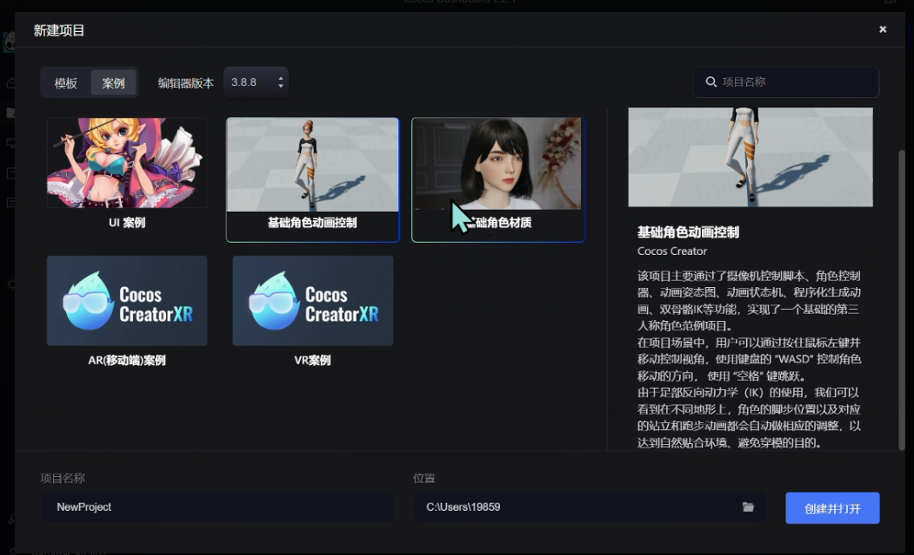
游戏引擎编辑器研究合集（Cocos · 星火 · GC · Godot · 网易Y3）
汇集 Cocos Creator 初探、网易Y3古风项目体验、星火编辑器与 GC 游戏编辑器使用体验，以及 Godot 上手经验，对比多套编辑器的定位、优缺点与适用场景，作为引擎选型与编辑器能力的横向归档。
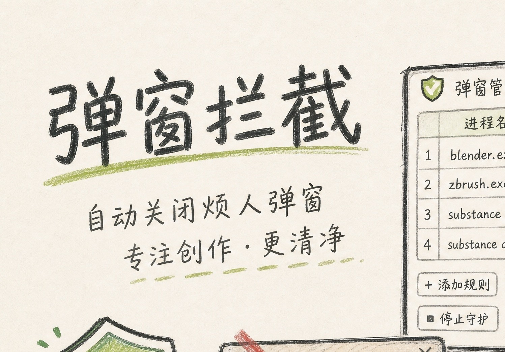
弹窗管家 PopupGuard 开发日志
针对3dsMax/Blender/ZBrush/SubstancePainter/SubstanceDesigner等可自定义启动弹窗的自动拦截工具。只关窗口不杀进程，预置中英文多版本规则并支持团队导出共享，附运行演示视频。
阅读全文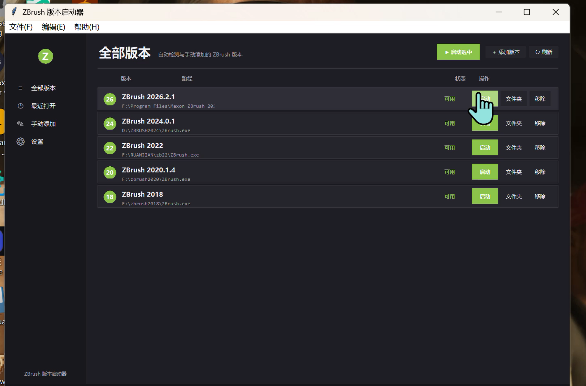
云算力与大模型研究合集（算力云部署 · LoRA × Trellis）
记录一天内网穿算力云平台并跑通生图全链路的实战流程，以及 LoRA 与 Trellis 三维大模型联合训练的测试研究，归档部署踩坑、训练链路与模型组合方向。
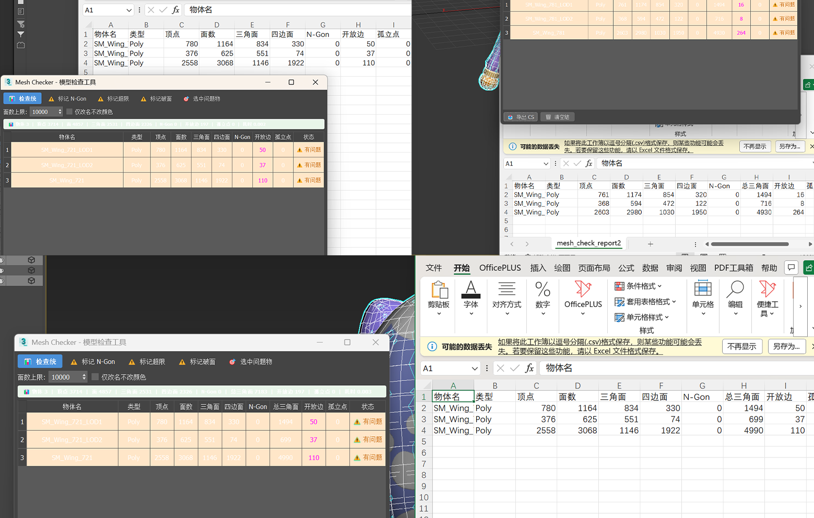
3ds Max Python脚本：批量统计模型顶点与面数
基于3ds Max Python API编写资产质检脚本，批量统计顶点、三角面、四边面数量和破面的数量，搭建「脚本初筛+人工优化」流水线，缩减美术资产核验耗时。
阅读全文Blender 自动化实践学习合集（Python脚本 · MCP工作流）
覆盖 Blender Python API 基础学习路线与 Blender MCP 自动化工作流教学手册，归档 API 指令、自然语言建模、Claude+MCP+混元 3D 全链路配置与图生 3D 流程。
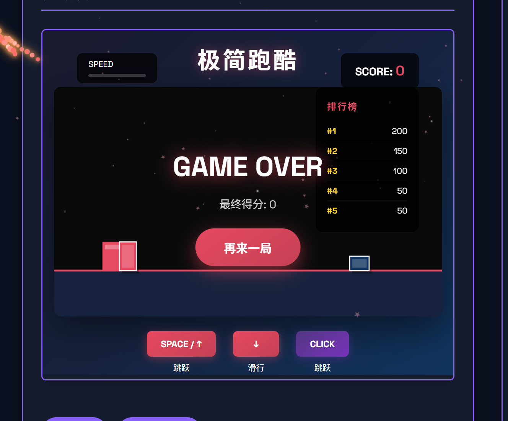
半人工半AI之3.5小时PBR全流程FPS角色
半人工半AI，3.5小时内完成的模块化FPS角色制作，眼球、睫毛、眉毛、发片为全手工制作、其余由AI生成。所有装备服装支持完全拆卸与独立细化，兼具灵活性与实用性，涵盖从概念设计到PBR材质输出的完整管线。
阅读全文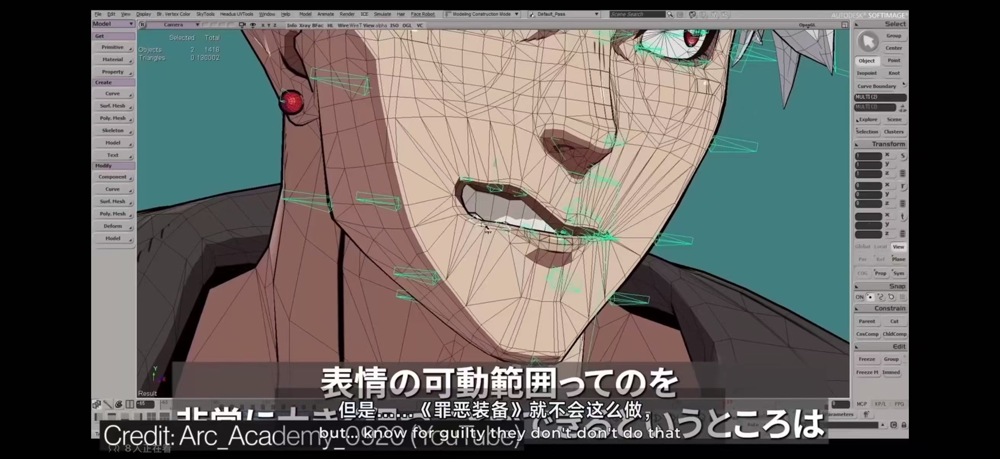
项目废案合集
集中归档中途暂停或不再推进的项目原型与方案。包括 CrazyWeb 参赛的 3D 音乐对战游戏等废案，整理其中止原因、已完成部分、留下的经验与可复用资产，后续新增废案统一收录在此页。
阅读全文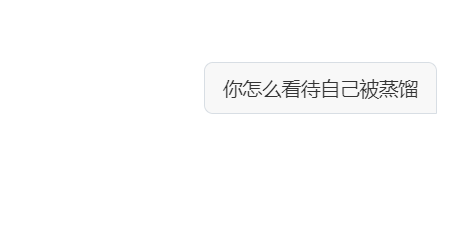
如何制作自己的 Skill · 赛博永生数字分身教程
把思维方式和说话腔调蒸馏成文件，既能封装重复流程，也能做成会像你一样思考的数字分身。包含通用 Skill 从建目录到触发生效的完整步骤，以及 自己.skill 双层结构与最小可运行样例。附隐私保护提醒，数字分身只公开表达方式与工作流，核心思考建议留给自己。
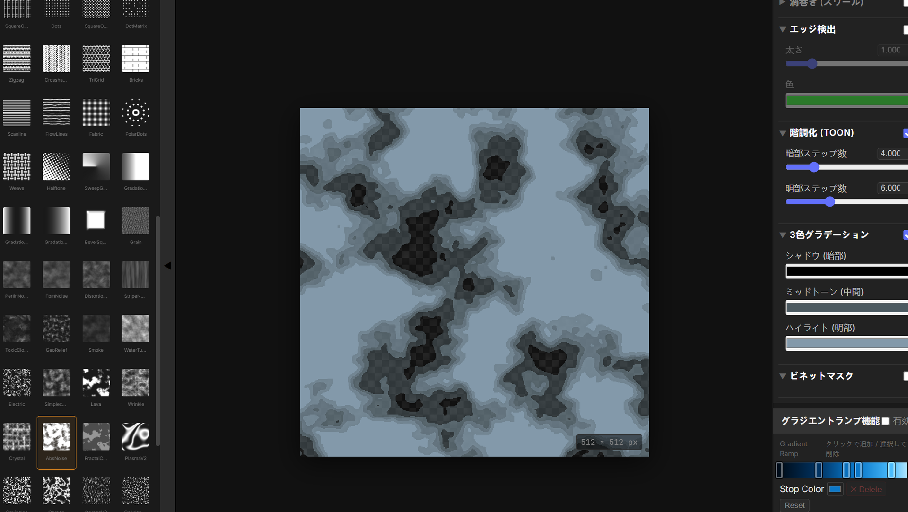